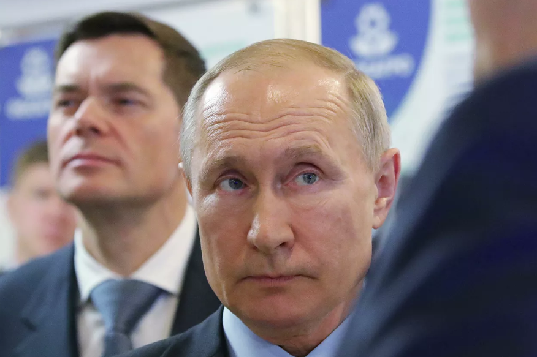

Путин заявил о необходимости всенародного голосования по Конституции
 Только всенародное голосование должно быть окончательной точкой при принятии поправок к конституции, работа по ним уложится в здравые сроки, заявил президент РФ Владимир Путин.
"Я предложил всенародное голосование, чтобы даже те, кто не принимал участие в этой дискуссии (по поправкам), приняли участие в том, чтобы окончательно утвердить поправки. Еще раз хочу это подчеркнуть, на мой взгляд, всенародное голосование и, по сути дела, плебисцит, волеизъявление граждан должны быть окончательной точкой при принятии решений по поправкам в Конституцию РФ", - сказал Путин на встрече с общественностью.
"Я думаю, что мы уложимся в здравые сроки (по принятию поправок)", - добавил президент.